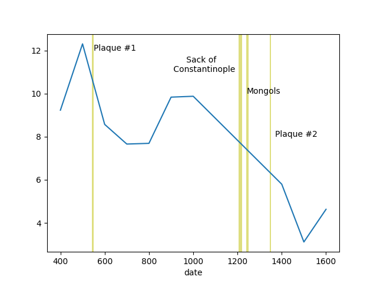
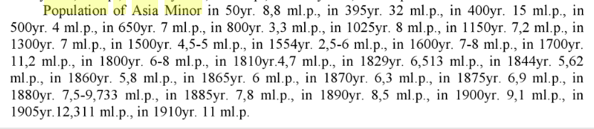

Population of Asia Minor
Analysis using the Seshat data; We used the Equinox-2020 dataset from below, local version here
http://seshatdatabank.info/datasets/
The encoding of this dataset carries different attributes in seperate rows, instead of columns, so preprocessing was necessary. We filter out population and territory data for Asia Minor, adjust the population for the current size of TR, ~800K sq meters. This way we are always looking at the same area, no matter under which gov that happened to b around, however big or small in that region.
import pandas as pd, zipfile
pd.set_option('display.max_columns', None)
with zipfile.ZipFile('seshat-row.zip', 'r') as z:
df = pd.read_csv(z.open('seshat-row.csv'))
df = df[df.NGA == 'Konya Plain']
df1 = df[df['Variable'] == 'Polity territory'][['NGA','Polity','Date.From','Value.From']]
df2 = df[df['Variable'] == 'Polity Population'][['NGA','Polity','Date.From','Value.From']]
df1 = df1.dropna()
df2 = df2.dropna()
df3 = df1.merge(df2, left_on=['NGA','Date.From'], right_on=['NGA','Date.From'])
df3 = df3.rename(columns={"Value.From_x": "area", "Value.From_y": "pop"})
df3['date'] = df3['Date.From'].str.replace("CE","").astype(float)
df3['pop'] = df3['pop'].astype(float)
df3['area'] = df3['area'].astype(float)
df3 = df3.sort_values('date', ascending=True)
df3['pop_scaled'] = (800000.0 / df3['area']) * df3['pop'] / 1e6
df4 = df3.set_index('date')
df4['pop_scaled'].plot()
plt.axvspan(541, 549, color='y', alpha=0.5, lw=0)
plt.axvspan(1204, 1220, color='y', alpha=0.5, lw=0)
plt.axvspan(1240, 1250, color='y', alpha=0.5, lw=0)
plt.axvspan(1347, 1351, color='y', alpha=0.5, lw=0)
plt.text(550,12,'Plaque #1')
plt.text(900,11,' Sack of \n Constantinople')
plt.text(1240,10,'Mongols')
plt.text(1370,8,'Plaque #2')
plt.savefig('asiaminor.png')

The arrival of new ppl into Asia Minor (Anatolia) starting from 600s and continuing for a few centuries seems to be around 1 million arriving into a population of 8 million. These people came to settle, not to battle (unlike Mongols later, who did). Once governance structures formed, around them, including them, they would have battled with Byzantium and also with eachother causing pop decreases, but the real killers were the plaques, and later the Mongols who beat the gov of the time, the Seljuks. On the Byzantine side the capital city was sacked by Crusaders in 1204.
As an alternative source, data from Demography, Part 1 by Vinogradov is also below.

According to this source, AM population hovers mostly around 7 million, it was 8 million at 1025, 7.2 million on 1300, 7 million 1500...
Both datasets support a minority thesis, and since culture codes are the important element, that are tied to geography, arrivals wld mostly be assimilated and belong to their region. This is the reason why today's Anatolians are close in culture to Greeks, Armenians, or Kurds, or one cld say are a culmination of all of them, including of course some migrants, in a small fashion.
Population (Later Years)
1881 17,388,604 1905 20,884,000 1919 14,629,000
Migrations
1850-1900 Circassians 800,000–1,500,000 1914-1918 Balkan Muslims 414,000 1921-1926 Balkan Muslims 399,000 1870-1900 Tatars 1,800,000